۱
لمینت، ونیر و طراحی لبخند
ونیر کامپوزیت و لمینت سرامیکی، طراحیشده بر اساس فرم صورت، لب و بایت شما.
- طراحی دیجیتال لبخند
- ونیر کامپوزیت مستقیم و غیرمستقیم
- لمینت سرامیکی
- بلیچینگ و باندینگ زیبایی
دندانپزشک فارغالتحصیل دانشگاه تورنتو با سابقهی کار بالینی از سال ۲۰۰۸ در کانادا و ایران. لمینت و ونیر طبیعی، طراحی لبخند، ایمپلنت با راهنمای جراحی و جراحی کمتهاجمی — با برنامهریزی دیجیتال و دقت در اجرا.
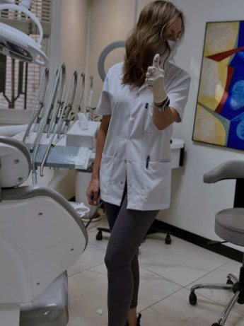
هر لبخند پیش از ساخته شدن طراحی میشود — با اسکن، عکاسی و هماهنگی با خود بیمار.
دکتر آیدا گلطلب راد مدرک دکترای دندانپزشکی (DDS) خود را در سال ۲۰۰۸ از دانشگاه تورنتو دریافت کرد و آزمونهای بورد ملی کانادا و هر دو مرحلهی بورد ملی آمریکا را با موفقیت گذراند. فعالیت حرفهای خود را در کلینیکهای مرکز تجاری تورنتو و مناطق محروم شمال انتاریو آغاز کرد و در دانشکدهی دندانپزشکی دانشگاه تورنتو مدرس پرهکلینیک اندودانتیکس و ترمیمی بود.
از سال ۱۳۹۹ (۲۰۲۰) بهعنوان دندانپزشک زیبایی، جراحی و ایمپلنت در یک مرکز چندتخصصی زیبایی و ایمپلنت در تهران فعالیت میکند. تمرکز او بر دندانپزشکی زیبایی — ونیر کامپوزیت و لمینت سرامیکی، طراحی لبخند و هماهنگی با زیبایی چهره — و همچنین جراحی ایمپلنت با راهنما، پیوند استخوان و جراحی پیزو است.
تشخیص دقیق، برنامهی درمان صادقانه و برخورد آرام از ویژگیهای کار اوست و رعایت دقیق پروتکلهای استریلیزاسیون و کنترل عفونت در همهی مراحل درمان الزامی است.
ونیر کامپوزیت و لمینت سرامیکی، طراحیشده بر اساس فرم صورت، لب و بایت شما.
کاشت ایمپلنت با راهنمای جراحی برای جایگزینی دقیق و قابل پیشبینی دندانهای از دست رفته.
جراحی استخوان با دستگاه پیزو برای درمان کمتهاجمی و آسیب کمتر به بافت اطراف.
روکش CAD/CAM با سیستم سرک — اسکن، طراحی، تراش و چسباندن در یک جلسه.
ردیف کردن دندانها با الاینرهای شفاف و متحرک.
عصبکشی دندانهای آسیاب با سیستم روتاری، همراه با درمانهای ترمیمی، لثه و دندانپزشکی کودکان.
برنامهی درمان با اسکن داخل دهانی و عکاسی بالینی تهیه میشود تا پیش از هر اقدامی، نتیجهی پیشنهادی را ببینید. در جراحیها از دستگاه پیزوالکتریک استفاده میشود که استخوان را با دقت برش میدهد و به بافت نرم آسیب کمتری میزند.
مرکز چندتخصصی زیبایی و ایمپلنت. ونیر کامپوزیت و لمینت سرامیکی، طراحی لبخند، ایمپلنت با راهنما و فوری، پیوند استخوان و سینوس لیفت، جراحی پیزو، روکش یکروزهی سرک، کشیدن جراحی، عصبکشی روتاری و درمان با الاینر.
یازده سال درمانهای ترمیمی، اندو، لثه، پروتز و کودکان، کارهای زیبایی و کشیدن جراحی، با برنامهی درمان بلندمدت برای بیماران ثابت.
دندانپزشکی عمومی کامل در شبکهی کلینیکهای مرکز تجاری تورنتو.
ارائهی خدمات دندانپزشکی به جوامع محروم شمال انتاریو.
آموزش دسترسی، شکلدهی کانال و تکنیکهای ترمیمی به دانشجویان DDS2 و IDAPP.
بورد کانادا — مارس ۲۰۰۸
بورد ملی آمریکا، مرحلهی اول — ژوئن ۲۰۰۶
بورد ملی آمریکا، مرحلهی دوم — مه ۲۰۰۸
قبل و بعد درمان بیماران دکتر راد. نتایج در هر فرد متفاوت است.
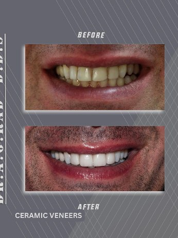
لمینت سرامیکی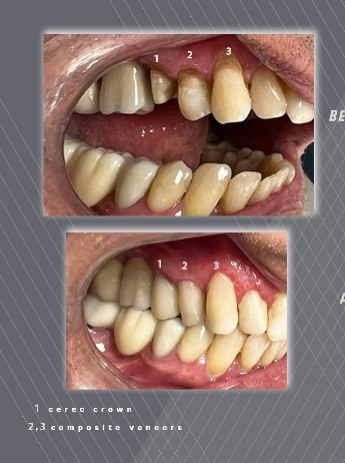
روکش سرک + ونیر کامپوزیت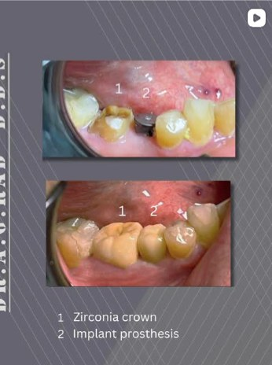
پروتز ایمپلنت + روکش زیرکونیا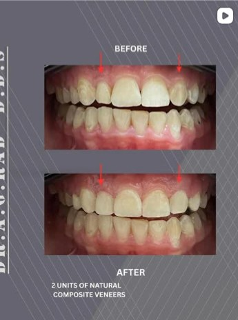
ونیر کامپوزیت طبیعی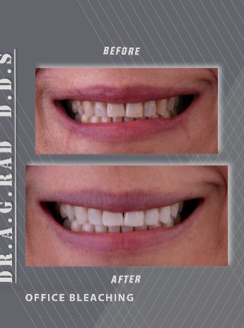
بلیچینگ در مطب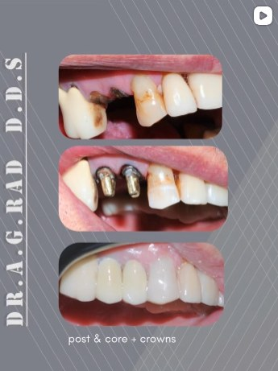
پست و کور + روکش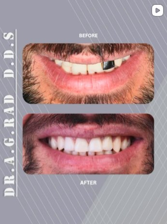
بازسازی لبخند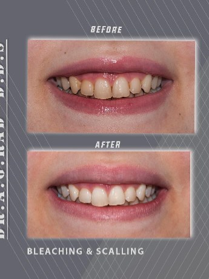
بلیچینگ و جرمگیری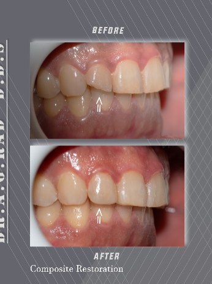
ترمیم کامپوزیت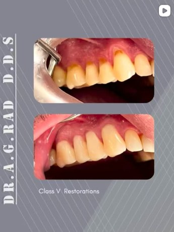
ترمیم کلاس ۵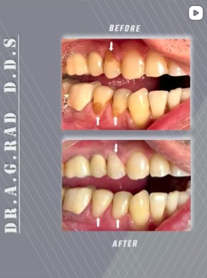
ترمیم دندانهای قدامی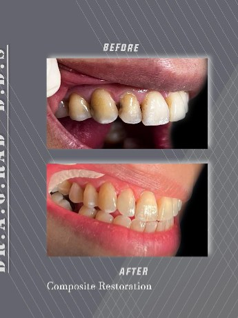
ترمیم کامپوزیتتهران، خیابان شریعتی، نرسیده به پل صدر، بنبست طالقانی، پلاک ۲، واحد ۲
مسیریابی ←مطالب این سایت جنبهی اطلاعرسانی دارد و جایگزین معاینهی حضوری نیست.